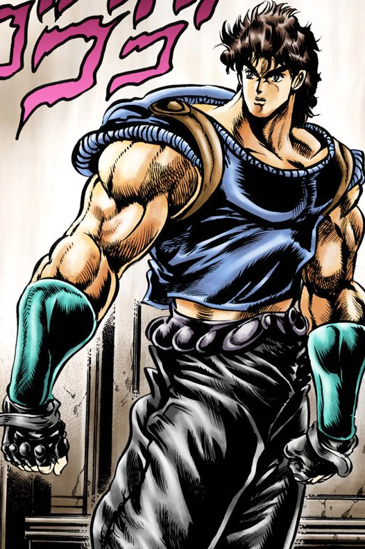
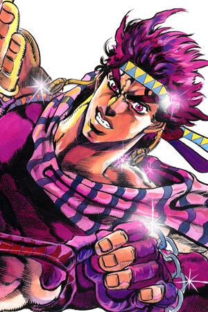
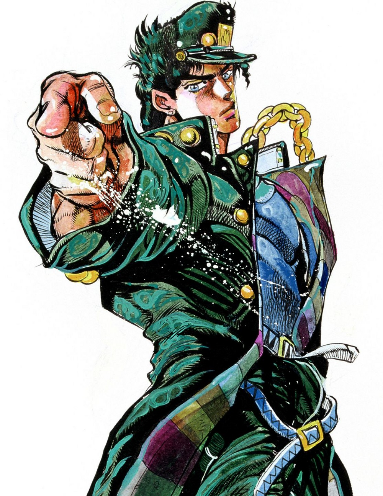
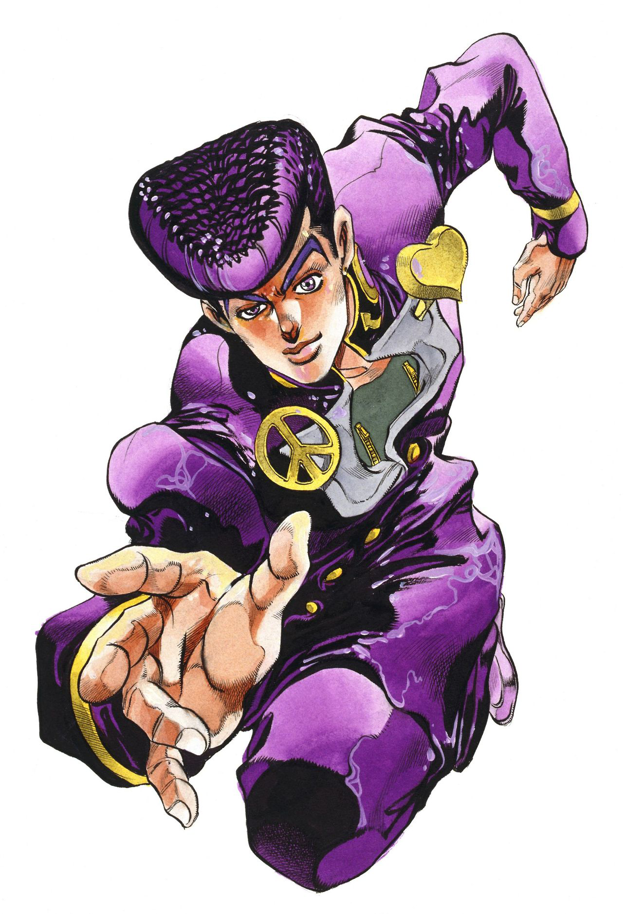
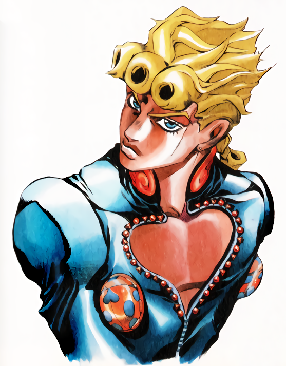
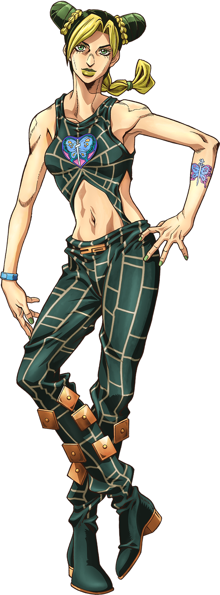
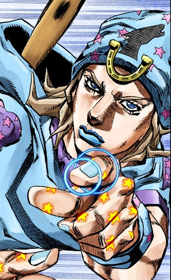
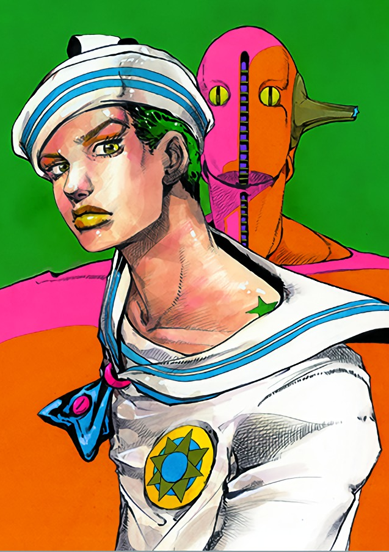

Jonathan Joestar (ジョナサン・ジョースター, Jonasan Jōsutā?) es el protagonista del primer arco argumental de JoJo's
Bizarre Adventure, "Phantom Blood".
Siendo hijo del aristócrata George Joestar
I, Jonathan es amable, honesto y positivo. Su vida llena de alegría cambió a la llegada de Dio Brando, su
nuevo hermano adoptivo.
El juego de palabras "JoJo" está presente de la manera más tradicional, combinando la primera sílaba de su
nombre con la primera sílaba de su apellido.
Durante su niñez, Jonathan era bastante orgulloso y travieso. A pesar de que ya que aspiraba a ser un
"verdadero caballero", le faltaban modales y en su mayoría se comportaba como un niño normal, a pesar de su
juventud solitaria. Sin embargo, su determinación inquebrantable era ya visible, cuando se levantaba ante el
acoso de Dio y sus intentos por quebrarlo psicológicamente.
Primero y ante todo, Jonathan se esfuerza por convertirse en un "verdadero caballero". Él lleva su apellido
Joestar con orgullo, nunca traicionando el código de conducta que ha establecido para sí mismo y tratara
cualquier otro ser humano con respeto a menos que demuestre ser maligno.
Jonathan tiene un arsenal de técnicas de artes marciales antiguas, la mayoría heredados de Will A. Zeppeli y
que involucran Hamon, a su disposición. Algunas son su creación original, cada una terminando con
"Overdrive".
“ ¡¡¡Hay momentos en que un caballero tiene que ser valiente y luchar, aún cuando su adversario es más grande que él y sabe que va a perder!!! ” —Jonathan Joestar
Joseph Joestar (ジョセフ・ジョースター, josefu jōsutā?) es el protagonista de la Parte 2: Battle Tendency, un personaje
principal en la Parte 3: Stardust Crusaders, y un personaje secundario en la Parte 4: Diamond is
Unbreakable. Es un vivo ejemplo de supervivencia,
al haber sobrevivido en más de una ocasión a enemigos que evidentemente le superaban en fuerza física,
haciendo uso de su astucia y habilidades innatas como peleador. Joseph enfrenta con valor las inverosímiles
amenazas que le acechan a lo largo de su vida con iniciativa e ingenio puro.
Es el segundo JoJo más recurrente en la serie, después de su nieto Jotaro Kujo, y es a su vez uno de los
personajes más reconocidos de la serie.En Battle Tendency, Joseph es un joven impetuoso y confrontacional
exaltado. Rápido en responder violentamente ante la más leve provocación, usó regularmente el Hamon para
responder a aquellos que le agraviaron ya desde su juventud. No teniendo respeto por la autoridad excepto
por la de su abuela Erina, y más tarde por Lisa Lisa, ha antagonizado con policías y mafiosos por igual.
Además es un individuo mal hablado, y regularmente se burla provocando a sus enemigos, disfrutando
agraviándolos. Se burló notablemente de Kars cuando lo lanzó al espacio, alegando haber planeado de nuevo
todo desde el principio sólo para fastidiarlo.
Joseph heredó un potencial innato para el Hamon y sus capacidades de su abuelo, Jonathan Joestar, así como de su madre Lisa Lisa. Adicionalmente, utiliza técnicas comúnmente presentes en la magia escénica para confundir a sus enemigos. Después de su entrenamiento en Hamon, Joseph frecuentemente combina su Hamon con otros objetos para realizar ataques complejos y creativos. Más adelante durante la Parte 3, él demuestra que puede pasar Hamon a través de su Stand, Hermit Purple. Sin embargo, a medida que envejecía, debido a la negligencia de su entrenamiento en Hamon, se convirtió en incapaz de hacer las mismas cosas de las que era capaz cuando era más joven y terminó envejeciendo a un ritmo relativamente normal, a diferencia de otros usuarios de Hamon más dedicados (como el caso de Tonpetty, Straizo y Lisa Lisa solo para nombrar algunos).
“ ¿Ho-la? ¿Podrías decir eso de nuevo? ¿Más lentamente? ¿En un idioma que yo entienda? ¡Dependiendo de lo que hayas dicho, podría patear.......! ” —Joseph Joestar en sus años de juventud
JJotaro Kujo (空条 承太郎, Kūjō Jōtarō?) es el protagonista de la Parte 3: Stardust Crusaders. También realiza un rol prominente en la Parte 4: Diamond is Unbreakable, uno secundario en la Parte 5: Vento Aureo, y nuevamente con un rol clave en la Parte 6: Stone Ocean. Serio, estoico e inteligente, Jotaro brinda gran poder y estabilidad a sus aliados. También es el primer JoJo introducido con un Stand y uno de los personajes más reconocidos de toda la serie.
Hirohiko Araki quería traer de vuelta a Dio Brando para lo que sería la tercera parte argumental del manga, por lo que buscó diseñar a un protagonista que saliera del estereotipo establecido en las partes anteriores. Para la creación de Jotaro, Araki tomó como inspiración al actor Clint Eastwood para darle al personaje su aire de matón. Cuando Araki y Eastwood se conocieron en 2012, Araki le pidió al actor posar como Jotaro y Eastwood recibió de parte del mangaka un cuadro de Jotaro con su estilo de dibujo actual.
Uno de los Stands más fuertes de la serie; Star Platinum posee sentidos, fuerza, resistencia, precisión y
velocidad sobre-humanos. Al igual que otros Stands poderosos físicamente (o de corto alcance), Star Platinum
sufre de un estrecho rango de actividad; sólo se activa en un radio de 2-3 metros de Jotaro.
Es similar al The World de DIO, y, como resultaría eventualmente, del mismo modo también puede utilizar para
detener el tiempo; una capacidad revelada justo al final de su pelea contra DIO.
La carta del tarot La Estrella, en base a la cual fue nombrado, simboliza la esperanza, por encima de todo.
“ Dame un respiro... (やれやれだぜ, yare yare daze?) ” —Jotaro Kujo
Josuke Higashikata (東方 仗助, higashikata jōsuke?, 助, "suke", también puede ser leído como "Jo") es el
protagonista principal de la Parte 4: Diamond Is Unbreakable. Es el cuarto JoJo de la serie JoJo's Bizarre
Adventure.
Josuke es un estudiante de primer año de preparatoria que reside en Morioh. Debuta en el volumen 29
(volumen 1 de Diamond Is Unbreakable) donde es buscado por Jotaro Kujo en nombre de Joseph Joestar por tener
relación con la Familia Joestar, ya que Josuke es el hijo ilegítimo de Joseph.
Josuke es un joven alto de complexión promedia. Lleva un pequeño arete en cada oído. La cualidad más importante para él es su corte de cabello estilo pompadour bien mantenido.
El Stand de Josuke, Crazy Diamond, puede restaurar los objetos (y organismos) a un estado anterior en su historia. Es perfecto para reparar daños y curar lesiones (similar a Gold Experience). También puede descomponer un elemento en sus componentes originales anteriores (ej: un vaso de agua con sal en arena, agua y sal; una mesa de madera en troncos de un árbol).
“ ¿¡Qué cosa dijiste sobre mi cabello!? ” —Josuke enojado cuando alguien insulta su peinado.
Giorno Giovanna (ジョルノ・ジョバァーナ, Joruno Jobāna?) es el protagonista principal de la Parte 5: Vento Aureo
(Golden Wind).
Es el primer hijo ilegítimo de DIO (el cual fue concebido con el cuerpo robado de Jonathan Joestar) en
aparecer en el manga y en la posterior adaptación anime. Anteriormente es introducido como Haruno Shiobana
(汐華 初流乃,?), un adolescente mitad japonés que vive en Italia. Habla de su intención de unirse a la banda de
Passione y su sueño de convertirse en un "Gang-Star" (combinación de "Gángster" y "Superstar").
Giorno es un chico adolescente de estatura promedia y constitución delgada, mucho más pequeño en estatura
que los JoJos anteriores. Tiene el cabello dorado de longitud moderada recogido trenzado en una cola de
caballo, con tres “remolinos” o formas tortellini distintivos colgando sobre su frente.
Gold Experience es uno de los Stands más versátiles de la serie. Tiene la capacidad de crear y manipular
vida al contacto con los objetos inertes, que Giorno utiliza con mayor frecuencia para producir plantas y
animales pequeños. Ambas pueden ser utilizadas para una variedad de propósitos que van desde disfrazar a
rastrear orígenes.
Gold Experience Requiem es obtenido después de Giorno perfora a Gold Experience con la Flecha escarabajo.
Tiene la capacidad de convertir la fuerza de voluntad y las acciones del adversario a cero. Cualquiera que
sea asesinado por Requiem también "tendrá su muerte devuelta a cero.",
“ Yo, Giorno Giovanna, tengo un sueño que sé, es justo. ” —Giorno Giovanna
Jolyne Cujoh (空条 徐倫, Kūjō Jorīn?) es la protagonista de Stone Ocean. Es la hija de Jotaro Kujo y es la única "JoJo" femenina hasta la fecha.Acusada de realizar un crimen que no cometió, fue enviada a la prisión de máxima seguridad Prisión Green Dolphin Street, donde descubre la fuente de la antigua aflicción legada de la Familia Joestar.
Jolyne es una joven mujer de altura por encima del promedio y de una complexión física entre delgada y atlética. Sus ojos son a menudo representados de color azul-turquesa. De ojos audaces, lleva su cabello en dos "capas": una base oscura que incluye dos rodetes odango a ambos lados de su cabeza, así como en una pequeña trenza que le cuelga por detrás; por encima de la cual, sea teñido o blanqueado, ella mantiene un trenzado que se enrolla alrededor de dos rodetes, uniéndose en un tramo corto en la parte posterior, y las mechones que enmarcan su rostro.
Caprichosa, abrupta, e irritable con sus mayores, Jolyne en su adolescencia se consideraría fácilmente como
una busca pleitos y causa perdida. Resentida hacia Jotaro por descuidar de ella, intentó varias veces captar
la atención de su padre cometiendo múltiples delitos menores y fue a la cárcel varias veces a causa de
estos.
Debido a la negligencia de Jotaro hacia su hija, Jolyne mencionó que era dependiente del afecto y aprobación
de aquellos a su alrededor, incluso estando lista para encubrir el accidente de Romeo, aunque ella fue
condenada a quince años de prisión por esto.
Stone Free es un Stand que otorga a Jolyne la capacidad de deshacer partes de su cuerpo en cuerdas. Esto lo
convierte en un Stand muy versátil, ya que le permite tanto escuchar conversaciones ajenas, como escapar y
ocultarse deshaciendo partes de sí misma.
Cuando ella ensambla la cuerda, Jolyne puede materializar adecuadamente a Stone Free, parcial o totalmente.
Stone Free es un Stand humanoide que tiene destreza física comparable a la de los Stands más fuertes.
“ ¡Dame un ...... descanso! (やれやれだわ, yare yare dawa?) ” —Jolyne Cujoh
Jonathan Joestar (ジョナサン・ジョースター, jonasan jōsutā?), mejor conocido como Johnny Joestar (ジョニージョースター, Joni Jōsutā?) es junto con Gyro Zeppeli, uno de los protagonistas principales de Steel Ball Run y un personaje menor en JoJolion. Es el séptimo JoJo de la serie JoJo's Bizarre Adventure. Un anterior prodigio en turf, el cual enfermó de paraplejia después de recibir un disparo, Johnny se une a la carrera SBR para descubrir el secreto detrás de las Esferas de Acero de Gyro Zeppeli, ya que son lo único capaz de curar sus piernas. A lo largo de la carrera, Johnny se convierte en un usuario del "Giro " y de un Stand cuando adquiere a Tusk. Johnny es la contraparte alterna de Jonathan Joestar, protagonista de la Parte 1.
Johnny es un joven de altura por debajo de la media, de contextura delgada y hasta cierto punto delicado. Sus ojos son de un color azul claro; su cabello es rubio claro y medianamente largo que le llega hasta los hombros y que se encrespa hacia arriba en los extremos. Johnny siempre lleva un gorro de lana de celeste con un estampado de pequeñas estrellas de cinco puntas.
Su cabello sobresale de agujeros en cada lado de la parte superior de su gorro, dándole forma de cuernos cortos. En el gorro lleva cosida una herradura que cuelga de la parte delantera y en el espacio que queda entre ambas puntas de la herradura tiene estampada silueta de la cabeza de un caballo.
Johnny primero busca el tutelaje de Gyro Zeppeli en los caminos del Giro para recuperar la movilidad de sus piernas. A menudo, Johnny canaliza el Giro con ayuda del uso de su Stand, Tusk; desarrollado inicialmente con el poder de la mano izquierda del Cadáver, y además con la ayuda de Gyro. A diferencia de Gyro que utiliza sus Esferas de Acero, Johnny usa sus uñas como arma.
“ Ha sido, verdaderamente, un camino en círculo... ” —Johnny Joestar, SBR Capítulo 85
El joven llamado tentativamente Josuke Higashikata (東方 定助, higashikata jōsuke?) es el protagonista de la Parte 8: JoJolion.  Sufre de una amnesia retrograda, careciendo de cualquier memoria previa a cuando fue hallado por Yasuho Hirose cerca de los Ojos de Muro en el pueblo Morioh.
El provisionalmente llamado Josuke Higashikata fue encontrado en el muro de ojos con amnesia y desnudo, su
objetivo principal era encontrar su verdadera identidad, pero luego descubre que es la fusión de dos
personas distintas y sus stands también.
Josuke está afligido por una amnesia retrógrada extensa, careciendo de memorias de sí mismo o de
acontecimientos antes de encontrarse con Yasuho Hirose, pero conservando diversos grados de conocimiento
Soft & Wet es el Stand de Josuke. Inicialmente perteneciente a Josefumi, Josuke retiene el Stand después de
la fusión con Kira, con algunas pequeñas diferencias.
Su habilidad primaria ("Despojar") es robar algún aspecto o característica de un objetivo; es contenido
dentro de una o más pequeñas burbujas de jabón (que llevan la imagen de su marca de nacimiento), que pueden
ser devueltos o transferidos a otros objetos. Esta capacidad ha sido utilizada tanto ofensiva como
estratégicamente.
“ ¡¿Quién demonios soy yo?! ” —Josuke Higashikata